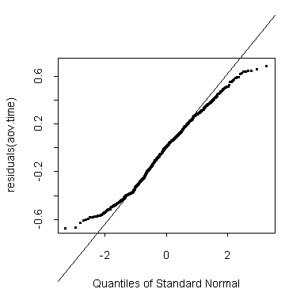

| / Home |
Keywords: two samples, analysis of variance, contrast, transformation, gamma regression
The following description is from Lee (1994):
Rugby football is a popular quasi-amateur sport widely played in the United Kingdom, France, Australia, New Zealand and South Africa. It is rapidly gaining popularity in the US, Canada, Japan and parts of Europe. Recently, some of the rules of the game have been changed, with the aim of making play more exciting. In a study to examine the effects of the rule changes, Hollings and Triggs (1993) collected data on some recent games.
Typically, a game consists of bursts of activity which terminate when points are scored, if the ball is moved out of the field of play or if an infringement of the rules occurs. In 1992, the investigators gathered data on ten international matches which involved the New Zealand national team, the All Blacks. The first five games studied were the last international games played under the old rules, and the second set of five were the first internationals played under the new rules.
For each of the ten games, the data list the successive times (in seconds) of each passage of play in that game. One interest is to see whether the passages were on average longer or shorter under the new rules. (The intention when the rules were changed was almost certainly to make the play more continuous.)
Data file (tab-delimited text)
| Hollings and Triggs (1993). Influence of the new rules in international rugby football: Implications for conditioning. Unpublished. |
| Lee, A. (1994). Data Analysis: An introduction based on R. Auckland: Department of Statistics, University of Auckland. |
Can use one-way analysis of variance on this data to compare the ten games. A contrast would then be relevant to compare the first five games to the second five.
Alternatively, one can pool the times for the first five games and the last five games together and conduct a two-sample test.
The times are highly skew to the right. They need to be transformed to approximate symmetry; alternatively they could be treated as exponential or gamma distributed.
S-Plus
We find that there is a small but highly significant reduction in passage time under the new rules. There are other differences between the games as well.
> rugby <- read.table("rugby.txt",header=T)
> rugby$Game <- factor(rugby$Game)
> attach(rugby)
> lm.time <- lm(Time~Game)
> boxcox(lm.time,lambda=seq(from=-0.5,to=0.5,length=20))
> plot(Game,Time^0.2)
> New.Rules <- (as.numeric(Game) > 5)
> aov.time <- aov(Time^0.2 ~ New.Rules+Game)
> summary(aov.time)
Df Sum of Sq Mean Sq F Value Pr(F)
New.Rules 1 1.14666 1.146656 14.47384 0.00015102
Game 8 1.56780 0.195975 2.47373 0.01174040
Residuals 969 76.76677 0.079223
> tapply(Time^0.2,New.Rules,mean)
FALSE TRUE
1.731406 1.662936
The transformed times are actually a little too short-tailed to be normal. The passage times are a little more regular than one would expect under random variation:
> qqnorm(residuals(aov.time)) > qqline(residuals(aov.time))

Are the times actually exponentially distributed? We find the times are far more short-tailed than exponential:
> glm.time <- glm(Time~Game,family=Gamma) > qres <- qres.gamma(glm.time,dispersion=1) > qqnorm(qres) > abline(0,1)
Are the passages times actually gamma distributed? This approximation proves to be slightly better than the normal approximation to Time^0.2. Nevertheless, the times are still too short-tailed. We have to conclude that the rules of the game discourage very short or very long passages of play.
> qres <- qres.gamma(glm.time) > qqnorm(qres) > abline(0,1)
|
Home - About Us -
Contact Us Copyright © Gordon Smyth |